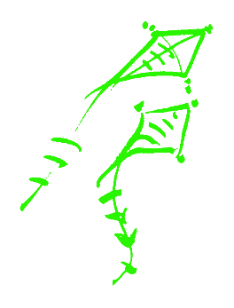
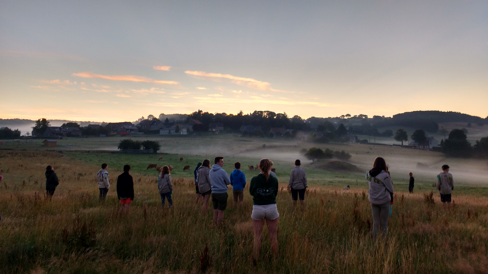
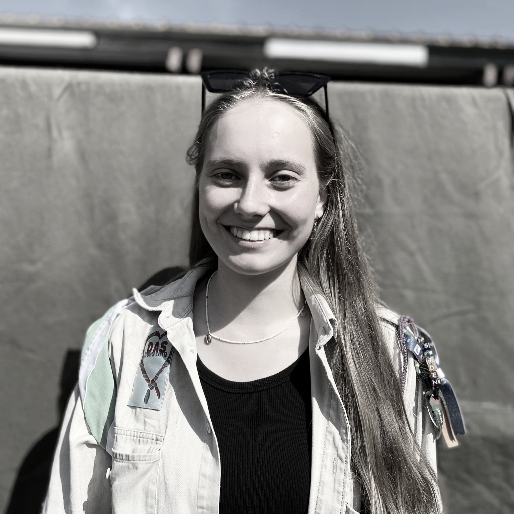
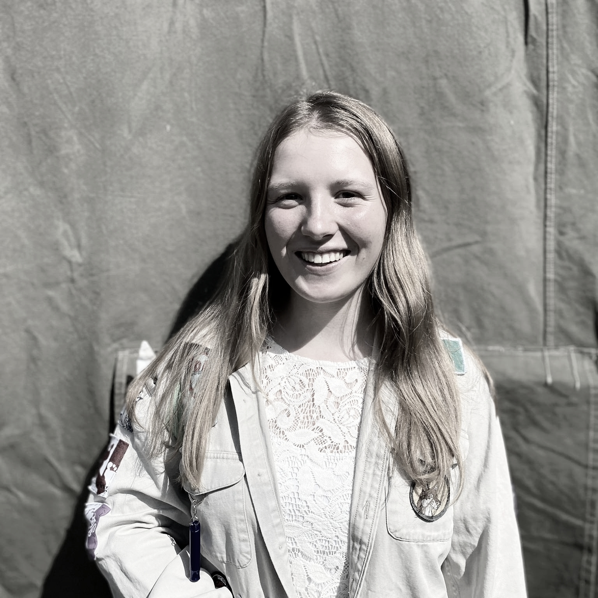
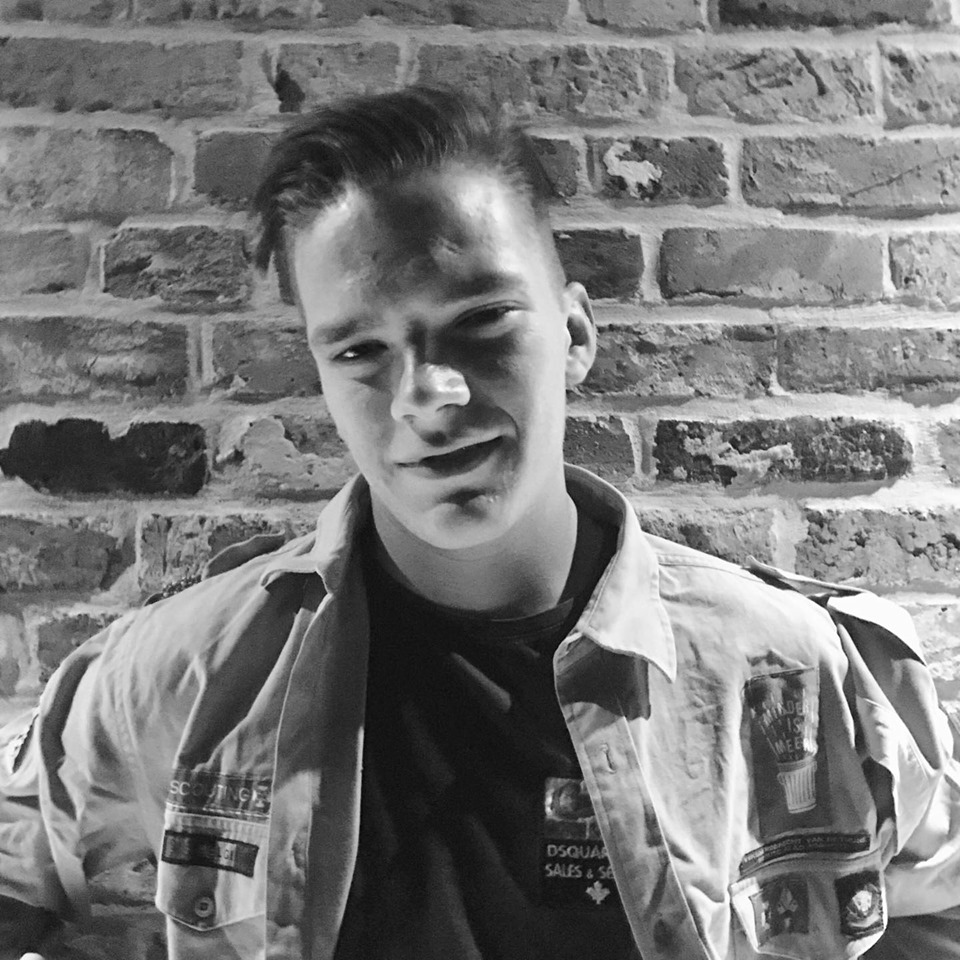

8 – 11 jaar
Ravotten, knutselen en de eerste stapjes naar zelfstandigheid.

De leeftijd van avontuur
Wie tussen 8 en 11 jaar is, kan meespelen bij de welpen. Daar krijgen ze de kans om met vriendjes en vriendinnetjes te spelen en zich onder te dompelen in het bos. Welpen is de leeftijd van ravotten, knutselen, bosspelen, sporten, sjorren, pionieren en woudloperskeuken — zelf koken op een zelfgemaakt vuur.
Zo zijn er nog allerlei andere activiteiten waarbij de eerste stapjes naar zelfstandigheid worden gezet. Op kamp is er een plechtige belofte voor de derdejaars, zodat ze klaar zijn om naar de jongverkenners over te stappen.
De werking wordt ingekleed met verhalen, fantasie en heel veel plezier!

Uniform
- Sjaaltje is verplicht
- Hemd, trui en T-shirt zijn vrijblijvend
Contact welpenleiding
welpenleiding@scoutsstadtorhout.be
Het team
Welpenleiding

Margaux Allemeersch
Evenwichtige bosbok
Margaux Cattrysse
Gedreven Taaie SaterhoenNore Maertens
Fijnbesnaarde Chimpansee